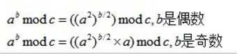

Code Template
Python多进程写入文件(multiprocessing template)
参考文档1
2
3
4
5
6
7
8
9
10
11
12
13
14
15
16
17
18
19#multiprocessing template
import multiprocessing
def write_file(result):
f = open('')
f.write(result)
def process(args):
'''
work
'''
return result
if __name__ == '__main__':
pool = multiprocessing.Pool(processes = 100)
for t in tasks:
pool.apply_async(process, (t, ),callback=write_file)
pool.close()
pool.join()
高次方取模
次方求模模板
就是求(a^b)% p其中 a, b, p 数值比较大
取余公式：(ab)% p = (a%p b%p)% p
1
2
3
4
5
6
7
8
9//次方求模模板
template<class Type>
inline Type ModPow(Type m,Type n,Type p) //m的n次方模p
{
if(n==0) return 1;
if (n==1) return m%p;
Type tmp=ModPow(m,n>>1,p);
return (tmp*tmp%p)*((n%2?m:1)%p)%p;
}
高次方求模
1 | /*高次方求模： |
大数取模的模板
取余公式：(a+b)% p = (a%p+b%p)% p;1
2
3
4
5
6
7
8
9
10
11
12
13
14
15
16char big_number[MAX];
template<class type>
type big_mod(char *a,type mod){
type len=strlen(a),result=0;
for(int i=0;i<len;i++){
result=((result*10)%mod+(a[i]-'0')%mod)%mod;
//如果数据不算太大，可以写成这样来节省时间result=(result*10+a[i]-'0')%mod;
}
return result;
}
//test
char s[200];
int main()
{ while(gets(s))
cout<<big_mod<int>(s,2)<<endl;
}
哈希模版(hash template)
1 | const int MAX=1000003; |
Python 协程处理 requests
1 | from gevent import monkey |